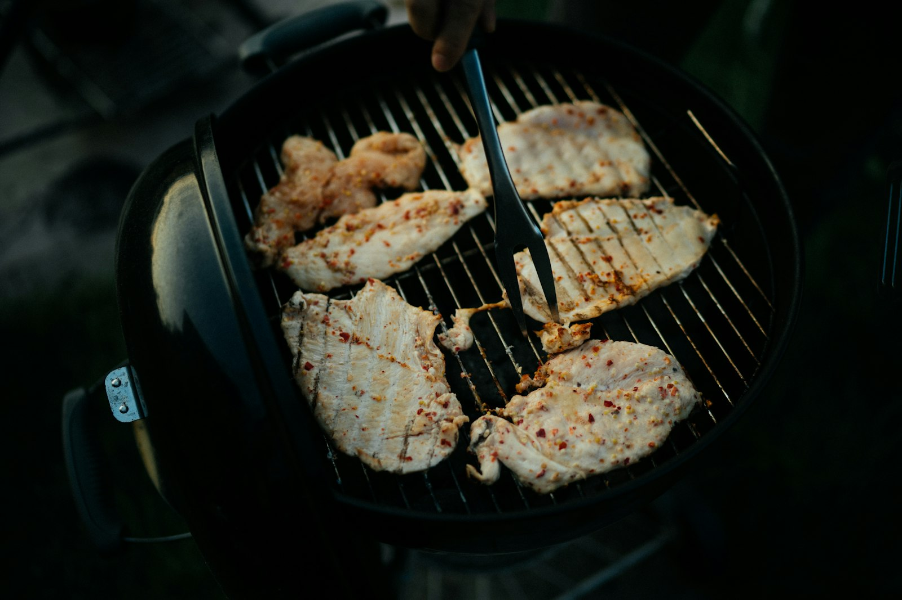

From a humble stall recipe to a Kota Bharu favourite.

Our Story
Ayam Goreng Pokya began as a humble family recipe in Kota Bharu, Kelantan. What started as a weekend stall has become a local favourite — crispy skin, juicy meat, and a marinade perfected over years of frying.
We fry fresh all day, every day. Marinated overnight, seasoned by hand, and served the moment it leaves the wok. No shortcuts — just the chicken Kelantan grew up on.
Then & Now
A family recipe tested at home, then shared at a small stall in Kota Bharu.
Regulars came back again and again — the crispy skin did the marketing.
A Kota Bharu institution serving ayam goreng the way it was meant to be — hot & fresh.